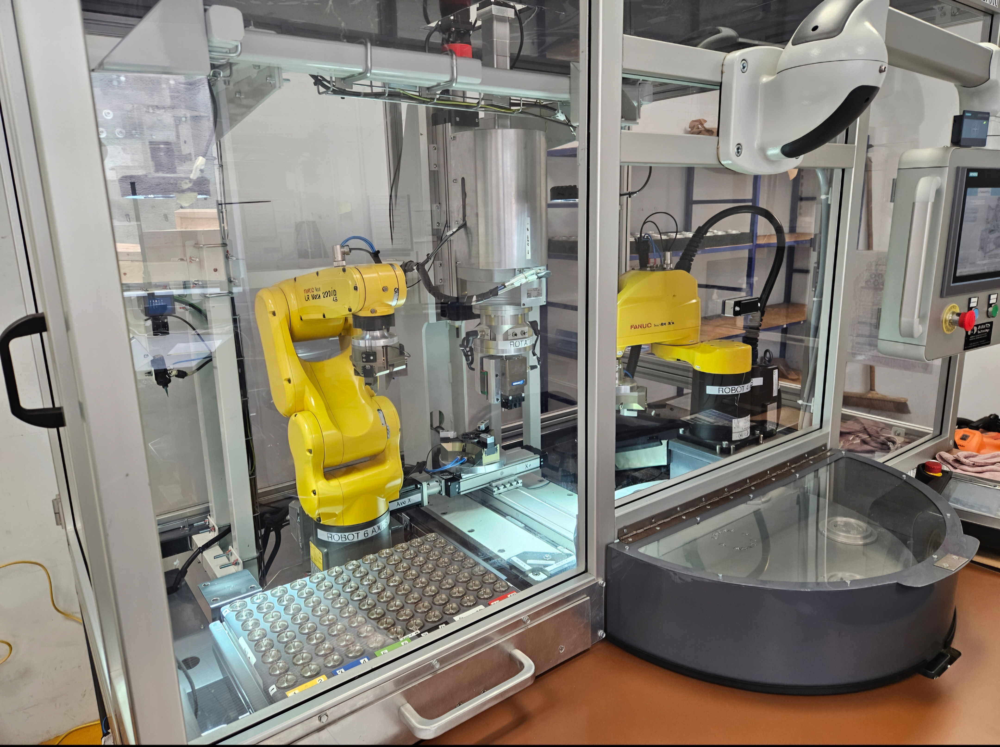
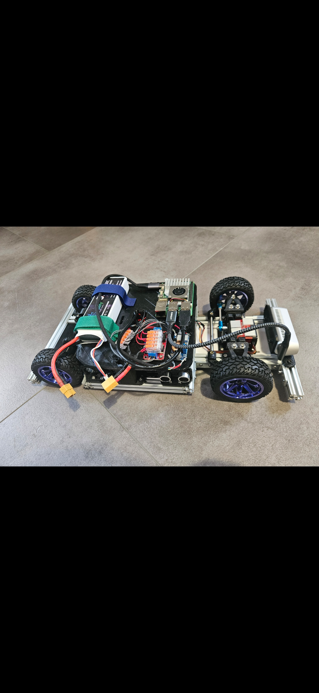

Martin Roth
Robotics engineer, graduated from Polytech Dijon in 2026. Passionate about robotics and the design of automated and intelligent systems.
Ingénieur Robotique, diplômé de Polytech Dijon en 2026. Passionné par la robotique et la conception de systèmes automatisés et intelligents.
Professional Experience
Robotics Internship - Alstom - Le Creusot, France
Robotics Internship - MIHB - Groissiat, France
Expérience professionnelle
Stage Roboticien - Alstom - Le Creusot, France
Stage Roboticien - MIHB - Groissiat, France
Projects
Robotics
1/10 Scale Car
Robotics and embedded systems project based on a 1/10 autonomous vehicle platform.
Drone
Drone development project involving electronics, control systems, and programming.
FANUC Parts Sorting
Industrial automation project using a FANUC robot for automated parts sorting.
Arduino Snake
Snake game on an LED screen, using an Arduino and a joystick.
Computer Science
Basic Neural Network Development
Development of a simple neural network for machine learning experimentation.
Checkers Game
Programming project focused on building a playable checkers game with game logic and AI concepts.
OpenCV Motion Detector
Computer vision project using OpenCV to detect movement in real time.
Projets
Robotique
Voiture échelle 1/10
Projet de robotique et de systèmes embarqués basé sur une plateforme de véhicule autonome à l’échelle 1/10.
Drone
Projet de développement de drone impliquant l’électronique, les systèmes de contrôle et la programmation.
Tri de pièces avec FANUC
Projet d’automatisation industrielle utilisant un robot FANUC pour le tri automatique de pièces.
Snake Arduino
Jeu Snake sur un écran LED, avec une Arduino et un joystick.
Informatique
Développement d’un réseau de neurones simple
Développement d’un réseau de neurones simple pour expérimenter des concepts de machine learning.
Jeu de dames
Projet de programmation visant à créer un jeu de dames jouable avec une logique de jeu et des concepts d’intelligence artificielle.
Détecteur de mouvement OpenCV
Projet de vision par ordinateur utilisant OpenCV pour détecter des mouvements en temps réel.
Contact
Email: rothmartin123@gmail.com
Phone: +33 7 83 99 72 07
Contact
Email : rothmartin123@gmail.com
Téléphone : +33 7 83 99 72 07
Robotics Internship - Alstom - Le Creusot, France
Worked on the improvement and optimisation of a robotic railway shock absorber assembly machine using FANUC industrial robots.
- Optimised the robotic gluing process by developing a multi-deposit glue system adapted to part diameter, improving assembly quality and reducing defects caused by glue overfilling or underfilling
- Optimised robotic assembly and screwing operations through trajectory modifications and virtual compliance programming to compensate for component positioning inaccuracies
- Reduced machine cycle time by 15%
Stage Roboticien - Alstom - Le Creusot, France
Participation à l’amélioration et à l’optimisation d’une machine robotisée d’assemblage d’amortisseurs ferroviaires utilisant des robots industriels FANUC.
- Optimisation du processus robotisé d’encollage : développement d’un système de déposes multiples de colle adaptées au diamètre des pièces afin d’améliorer la qualité d’assemblage et de réduire les défauts liés au surdosage ou au sous-dosage
- Optimisation des opérations robotisées d’assemblage et de vissage grâce à des modifications de trajectoires et à la programmation de compliance virtuelle pour compenser les imprécisions de positionnement des composants mécaniques
- Réduction du temps de cycle de 15%

